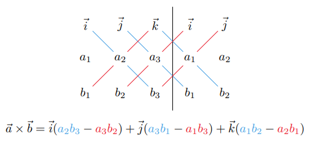

Table of Contents
Miscellaneous Topics

NARROW DISPLAY WARNING
You are most likely using a tablet or mobile device in portrait orientation. This website is best viewed using a typical computer screen with the browser window maximized.
Viewing this website in portrait orientation can cause problems with equations being longer than the screen width (you can scroll to the right), images being poorly sized, and the font size of maths text being much smaller than regular text. If your only option is a tablet or mobile device, your viewing experience will be better if you view this website in landscape orientation. You might need to refresh the page to fix any problems after rotating.
In maths, the cross product, or vector product, calculates a vector perpendicular to a pair of input vectors. The name comes from the operator between the two input vectors, which is an "x" with right angles. The direction of the output vector follows the right hand rule with the order of the two input vectors and has magnitude equal to the parallelogram formed by the two input vectors. It is used extensively in vector calculus and physics.
The cross product of $\vec{a}$ and $\vec{b}$, written as $\vec{a} \times \vec{b}$, is defined as,
\begin{equation} \vec{a} \times \vec{b} = \langle a_{2}b_{3}-a_{3}b_{2} , a_{3}b_{1}-a_{1}b_{3} , a_{1}b_{2}-a_{2}b_{1} \rangle \end{equation}A convenient way to remember the formula uses the determinant of a 3x3 matrix.
\begin{equation} \vec{a} \times \vec{b} = \text{det}\begin{bmatrix} \vec{i} & \vec{j} & \vec{k} \\ a_{1} & a_{2} & a_{3} \\ b_{1} & b_{2} & b_{3} \end{bmatrix} = \vec{i}(a_{2}b_{3} - a_{3}b_{2}) + \vec{j}(a_{3}b_{1} - a_{1}b_{3}) + \vec{k}(a_{1}b_{2} - a_{2}b_{1}) \end{equation}Here is a mnemonic for computer the 3x3 determinant.
The cross product follows the right hand rule: orient your right hand so that your extended fingers can point in the direction of $\vec{a}$ and you can curl your fingers towards $\vec{b}$, then your thumb will point in the direction of $\vec{a} \times \vec{b}$.
The right handedness of the cross product means $\vec{a} \times \vec{b}$ points in the opposite direction to $\vec{b} \times \vec{a}$.
\begin{equation} \vec{a} \times \vec{b} = -(\vec{b} \times \vec{a}) \end{equation}The length of the cross product is the area of the parallelogram formed by $\vec{a}$ and $\vec{b}$, and if $\vec{a}$ and $\vec{b}$ are parallel, then $\vec{a} \times \vec{b} = \vec{0}$ because the area of the parallelogram is zero.
\begin{equation} |\vec{a} \times \vec{b}| = |\vec{a}||\vec{b}|\sin(\theta) \end{equation}The derivation is quite long, but here is a link to a YouTube Video if you're interested.
Video if you're interested.
The area of a parallelogram is the base times the height. In this case, the height is $|\vec{b}|\sin(\theta)$ and the base is $|\vec{a}|$, so the area is $|\vec{a}||\vec{b}|\sin(\theta)$.